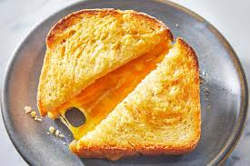

Grilled Cheese
Home

Description
Grilled cheese is a classic dish for anyone who wants to eat something, but isn't sure what to eat.
A delicious combination of bread and cheese, any 15th century peasant would have dreamed of this dish.
We will not be putting a twist on this dish, because it doesn't need one.
Ingredients
- 2 pieces of bread
- 6 slices of Cheddar cheese
- 3 slicesof Monterey Jack cheese
- onions to taste
- Butter or margarine
Steps for cooking
- Spread butter on both of the pieces of bread
- slice the cheddar, and put three slices on each piece of bread
- Slice the Monterey Jack, and put it on the bread.
- close the sandwich
- spread butter on the outside of the pieces of bread
- put a pan on the skillet and turn it to medium heat
- put the bread and cheese on the pan
- grill on medium heat for five minutes
- flip it over and grill for another five minutes.
- Enjoy!